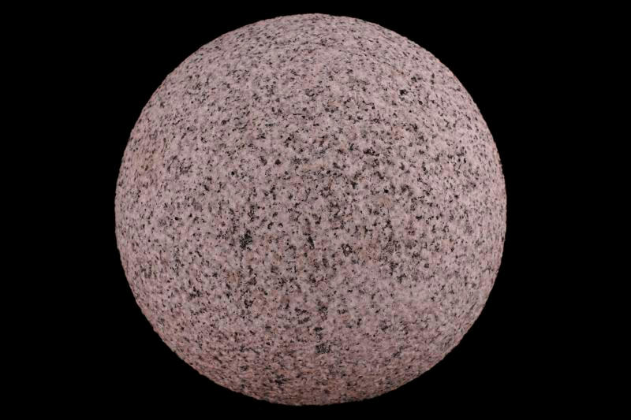

Радон

Радо́н (химический символ — Rn, от лат. Radon) — химический элемент 18-й группы (по устаревшей классификации — главной подгруппы восьмой группы, VIIIА) шестого периода периодической системы химических элементов Д. И. Менделеева с атомным номером 86.
Открытие радиоактивности и радона совпало с повышением интереса к биологическим эффектам радиации. Было установлено, что вода многих источников минеральных вод богата эманацией радия (так именовался радон в то время). Вслед за этим открытием последовала волна моды «на радиацию». В частности, в рекламе того времени радиоактивность минеральных вод выдавалась за главный показатель их полезности и эффективности.
Радон получают как побочный продукт в процессе переработки урансодержащих руд; из получаемой смеси газов удаляют примеси, затем конденсируют радон жидким азотом. Радон используют в медицине для приготовления радоновых ванн, в металлургии при определении скорости газовых потоков в доменных печах, в геологии при поиске радиоактивных элементов и др.